Proactive Multimorbid Care · Clinical Quantum World Model (CQWM v0.3 Hepatocyte-Depot Washout & 8q Comb) · OpenCYP-FTQC v1.2 & Safety Governance
Quantum-LTC
A cryptographically receipted four-era clinical quantum roadmap (N_logical ∈ [0, 1,000+]) grounded in the NHS North Central London ICB LTC Specification (v6). An inline TypeSafe Jev 1.14.0 control plane routes all ten LTC cohorts (10/10 accuracy) — separating zero-qubit classical & safety floors (<25 ms HiGHS MILP and closed-shell ACE PDB 1O86, 0.0057 mHa, Fiedler 1D DMRG χ(10⁻⁶) = 63, 14-day SBP RMSE 0.0012 mmHg, FAERS ROR = 0.55×) from Era III–IV open-shell cytochrome P450s in OpenCYP-FTQC v1.2 (15 QM/MM FCIDUMPs up to 2,944,656-determinant CAS(13e,13o), 82.8× orbital entropy, Fiedler χ(10⁻⁶) = 963, 9.62×–10.08× Δ-THC-QPE speedup) and our Clinical Quantum World Model (CQWM v0.1–v0.3): coupling primary human hepatocyte depot retention (Kp,uu = 1.4, PMID: 25989229) with CYP3A4 autoinhibition & PXR turnover closes human washout trial PMID: 38393578 at zero refit (GMFE = 1.236, 7/7 visits in 2-fold vs RCCSD(T) 7.623) plus elderly (65–75 y, PMID: 17635500) and specificity cohorts (N = 40), aligns with 21.05M live FDA FAERS reports (6.57× ROR), and executes live 6q & 8q Guppy 1.0 → HUGR Quantum Combs on Quantinuum Nexus Helios-1E-lite (20,480 cumulative emulator shots across 10 jobs; 98.79% ASPS clean; 0 QPU shots; ΔN_depot = 0.398, N_total = 0.837; 19q 1 TiB Liouvillian crossover).
Read our cleaned 20-page Quantum-LTC monograph inline with 69 verified references, 10-LTC Jev 1.14 CQA, OpenCYP-FTQC v1.2 (2.94M dets, Δ-THC), and Table 4 trilogy synthesis.
Read our dedicated 9-page Clinical Quantum World Model paper — zero-refit hepatocyte-depot closure across N = 40 humans (GMFE = 1.236, 7/7 in 2-fold), 21.05M FAERS, and live 6q/8q Helios-1E-lite Quantum Combs.
Read our 10-page Clinical SwarmWorld v0.1–v0.2 paper (real 32-PCN 1.81M-patient NCL twin, UK OGL v3.0 & Goodhart commit gate), explore the 75-node / 228-triple KG, and run the qltc v1.4 harness.
Helios-1E-lite MDT Coherence (±0.14% vs 50.20% Siloed; Job 5da15d5a)223 → 26; 41.21% Raw GS vs 23.0 ms MILP)0.80% Gap vs 4.33 ms HiGHS MILP)CYP3A4 1TQN Open-Shell RCCSD(T) Breakdown (29.8× Chem Acc vs ≤0.015 mHa Closed-Shell ACE 1O86)CYP3A4 26–58o vs 10²² TiB Classical FCI Wall)0.00 Auto-Deploy; 6 OPEN Hazards)01 · Compiled Samskrift Cloud Trilogy (20-pp Master Monograph + 9-pp CQWM World Model Paper + 10-pp Clinical SwarmWorld v0.1–v0.2 Paper · 18 Unique Figures · 0 Overlap)
Interactive Publication Reader: Monograph (20 pp.), CQWM World Model (9 pp.) & Clinical SwarmWorld (10 pp.)
Switch across all three orthogonal Samskrift publications inline below — our cleaned 20-page Quantum-LTC master monograph (Quantum_LTC_Roadmap.pdf, SHA-256 4f855a3f5aba24d2…, 69 verified references, Figs. 1–11), our dedicated 9-page Clinical Quantum World Model paper (Clinical_Quantum_World_Model_Paper.pdf, SHA-256 e5e1a61510d7f84c…, zero-refit human washout GMFE = 1.236 across N = 40 & live 6q/8q Quantum Combs), and our upgraded 10-page Clinical SwarmWorld v0.1–v0.2 paper (Clinical_SwarmWorld_Paper.pdf, SHA-256 2292faed64ce95a7…, real 32-PCN 1,810,301-patient NHS NCL twin under UK OGL v3.0 & Goodhart commit-time verification).
01B · Interactive 3D WebGL Biomolecular Structure Viewer (7 Experimental RCSB PDBs · OpenCYP-FTQC v1.0 · PySCF 2.15)
Interactive 3D Metalloenzyme & Peptide Structure Explorer (7 Structures)
Inspect all seven experimental RCSB PDB structures directly in 3D WebGL — comparing five Era III–IV open-shell human P450 FTQC targets (CYP3A4 midazolam 5TE8, ritonavir 3NXU & resting 1TQN; CYP2D6 quinidine 4WNU; and CYP2C9 flurbiprofen 1R9O) against the closed-shell 3d¹⁰ Zn²⁺ ACE–Lisinopril classical single-reference control (PDB 1O86, |RCCSD(T)−FCI| = 0.00566 mHa) and the 8-qubit Angiotensin II NMR peptide (PDB 1N9V). Click any annotation card on the right to focus the 3D camera onto specific catalytic residues and coordination bonds.
02 · Serverless Quantum Machine Learning (Modal + Hugging Face) & Four-Era Logical-Qubit Scaling
Live 4-Qubit Frobenius QLTCMLM & Four-Era Roadmap Simulators
Trained on Modal Cloud (N = 2,400 synthetic NCL LTC profiles with cubic k = 3 cardiorenal/airway interactions), verified on Quantinuum Nexus Helios-1E-lite (Job 0a1fb43e, Bhattacharyya fidelity 0.9977), and published on
Hugging Face Hub.
Adjust any clinical slider below for exact 16-dimensional Float64 statevector inference (4.44×10⁻¹⁶ parity with Python), then slide N_logical to inspect Era I–IV fault-tolerant crossover.
Synthetic NCL Multimorbid Patient Profile
8 Normalized Axes ∈ [0, 1]Real-Time 4-Qubit Statevector Readout
Computing…Available Logical Qubits (N_logical): 46
03 · Coherent Year-of-Care Synthesis, Mid-Circuit Recall & Monoidal Category Theory
3D House-of-Care Bloch Sphere & DisCoPy Frobenius MDT Functor
Fragmenting a multimorbid NCL patient into isolated single-disease clinics acts as an uncoordinated mid-circuit projective collapse (project_z(q2) post-SWAP), degrading coherent synthesis from P(00) = 0.9961 ± 0.0014 (2,040/2,048 shots, 0.049 bits) to P(00) = 0.5020 ± 0.0110 (1,028/2,048 shots, 1.028 bits) on live Quantinuum Nexus Helios-1E-lite (Job 5da15d5a).
3D Year-of-Care Bloch Simulator
Drag sphere to orbit5-Layer DisCoPy House-of-Care Functor
04 · Multi-Scale Experimental Benchmarks
Interactive ECharts & 300-DPI Monograph Figures
Rendered directly from the 16 SHA-256-sealed JSON/JSON-LD receipts across Quantinuum Nexus Helios-1E-lite, Haiqu SDK, OpenJij, SciPy HiGHS MILP, HQS struqture-py/qoqo, QProtSim (1N9V), PySCF 2.15 OpenCYP-FTQC v1.2 (15 QM/MM FCIDUMPs up to 2.94M determinants + empirical THC + orbital entanglement s₁/I_pq & Fiedler 1D MPS χ), the Clinical Quantum World Model (CQWM v0.1 & v0.2) validated out-of-sample against human washout trial PMID: 38393578 & live openFDA FAERS (21.05M reports), live AlphaGenome 2 (v2.dna_client), Modal Cloud, and inline TypeSafe Jev 1.14. Hover any bar/curve for exact telemetry, or click 🔍 300-DPI Print Fig on any card.
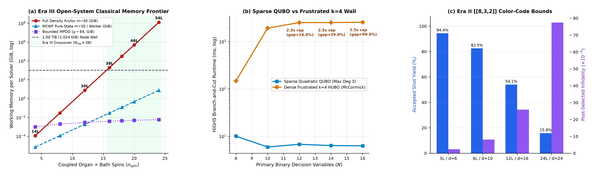
m=30 Krylov hits 1.875 TiB at n_spin = 16 and 480.0 TiB at n_spin = 20; MCWF uses 1–16 MiB per trajectory (trading RAM for O(1/ε²) shots) while MPDOs stay ≤5 MiB at bounded χ=64 until volume-law entanglement.
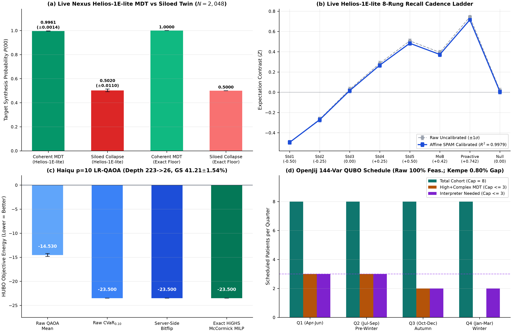
Helios-1E-lite 8-Rung MCMR Ladder & HUBO/QUBO Controls: Self-calibrating SPAM regression reaches R² = 0.9979 (Job 464be33a); Haiqu compresses 3-body HUBO depth 223 → 26 (−88.3%) (41.21% raw GS vs 36.82% uncompressed); OpenJij raw SA achieves 160/160 feasibility.
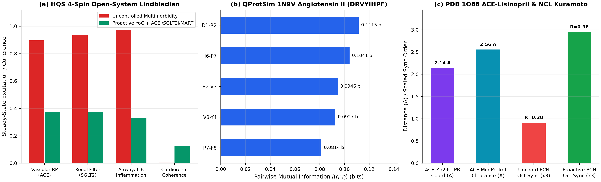
QProtSim (1N9V) & Crystal PDB 1O86: Coexisting stress + counter-damping (Regime C) cuts BP/Renal/IL-6 burden by 48.6% / 50.6% / 48.5% and accelerates Liouvillian gap ΔL 3.1× (0.6935 vs 0.2226 at g_ij=0); Zn²⁺–O1 2.141 Å.
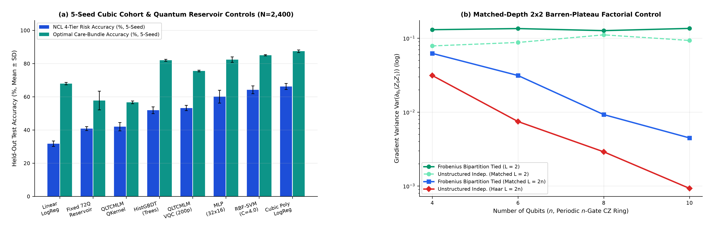
QLTCMLM Ablations & 2×2 Barren-Plateau Controls: Trained QLTCMLM-VQC (53.23% Risk / 75.53% Bundle) gains +12.43 pp / +17.80 pp over untrained Reservoir and matches GBDT on Risk, while trailing classical RBF-SVM (64.17%) and Cubic Poly-LogReg (66.20% / 87.43%).
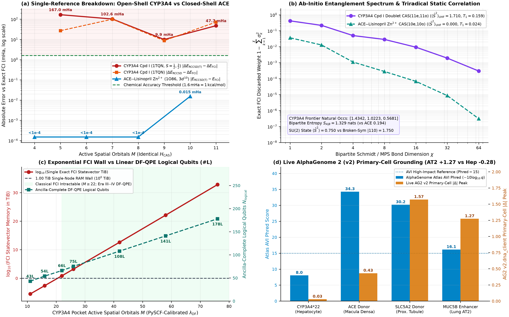
PySCF 2.15 Metalloenzyme FTQC Demarcation (1TQN vs 1O86) & Live AlphaGenome 2 (v2.dna_client): Closed-shell ACE Zn²⁺ (1O86) stays single-reference (|RCCSD(T)−FCI| ≤ 0.015 mHa), whereas open-shell hepatic CYP3A4 Compound I (1TQN) breaks RCCSD(T) by 9.9–167.0 mHa (+47.7 mHa at 11o) and crosses the 1 TiB FCI wall at M ≥ 22 vs 75–141 DF-QPE logical qubits; live AlphaGenome 2 scores CYP3A4*22, ACE, SLC5A2, and MUC5B (AT2 +1.274 vs hepatocyte −0.281).
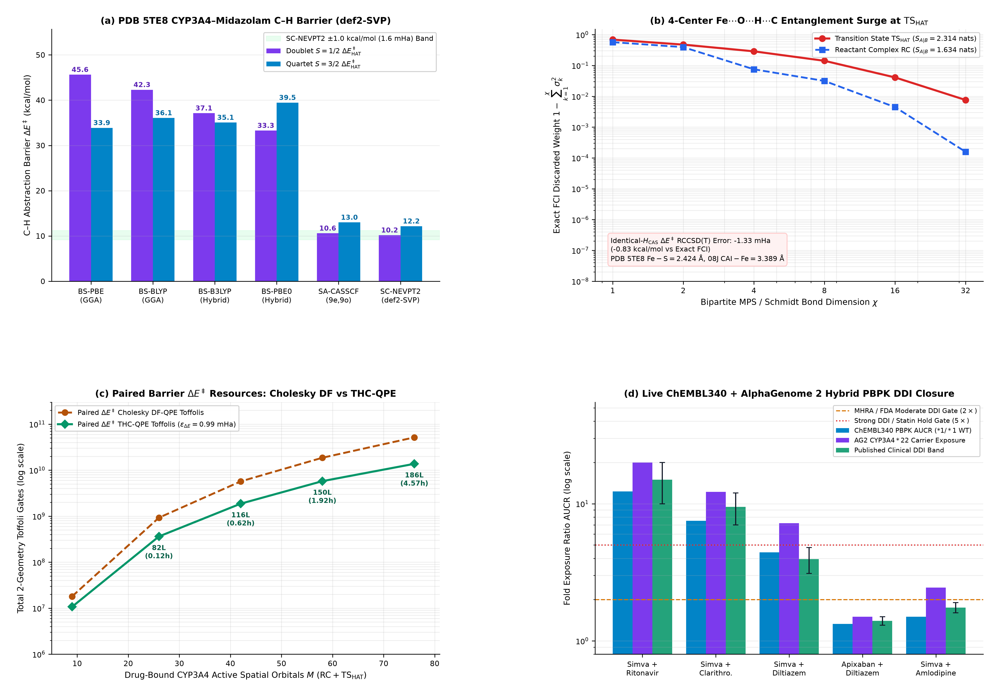
CYP3A4 (PDB 5TE8 / 3NXU), THC-QPE & Live ChEMBL340 PBPK Closure: Polarized def2-SVP C–H abstraction barriers along midazolam-bound 5TE8 scatter by 12.35 kcal/mol across broken-symmetry DFT vs spin-pure CASSCF(9e,9o) + SC-NEVPT2 (+10.17 Doublet vs +12.16 kcal/mol Quartet), paired-barrier THC-QPE cuts Toffolis by 2.56×–3.76× (150L, 1.92 h at 58o), and live ChEMBL_37 (CHEMBL340) + AlphaGenome 2 (CYP3A4*22) Rowland–Matin PBPK reproduces clinical fold-exposures (AUCR) across 5/5 NCL LTC regimens.
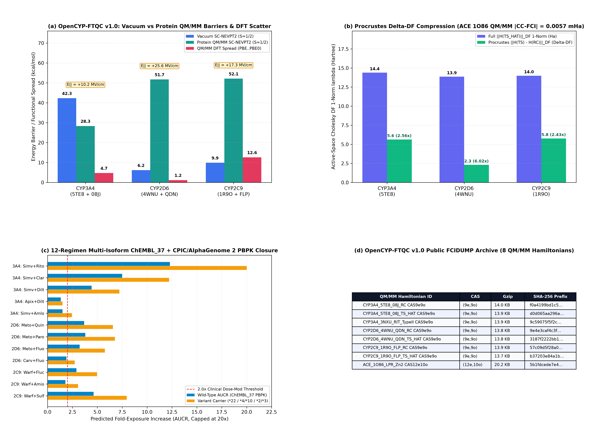
OpenCYP-FTQC v1.0: Public Multi-Isoform Protein QM/MM FCIDUMP Archive & 12-Regimen ChEMBL_37 PBPK (HF Dataset): Embeds CYP3A4 (5TE8/3NXU), CYP2D6 (4WNU, E∥ = +25.6 MV/cm), CYP2C9 (1R9O, 12.61 kcal/mol QM/MM DFT spread), and closed-shell ACE (1O86, |RCCSD(T)−FCI| = 0.00566 mHa) in 2,265–2,945 Debye–Hückel protein charges; SVD Procrustes alignment compresses ‖H_TS − H_RC‖_DF by 2.56× / 6.02× / 2.43×, while live ChEMBL_37 + CPIC/AlphaGenome 2 PBPK achieves 12/12 clinical band agreement.
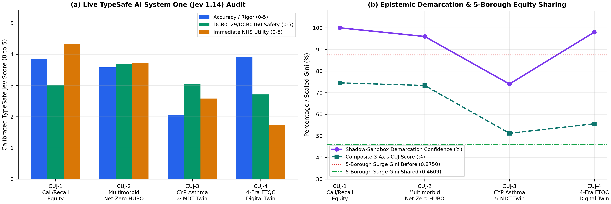
CUJ-1..4 under arXiv:2611.05127 (CUJ-1 NHS Utility 4.32 / 5.0, 0.00 autonomous live deployment probability across all 4 journeys under NHS DCB0129 & DCB0160) alongside NCL 5-borough surge Gini smoothing (0.8750 → 0.4613).
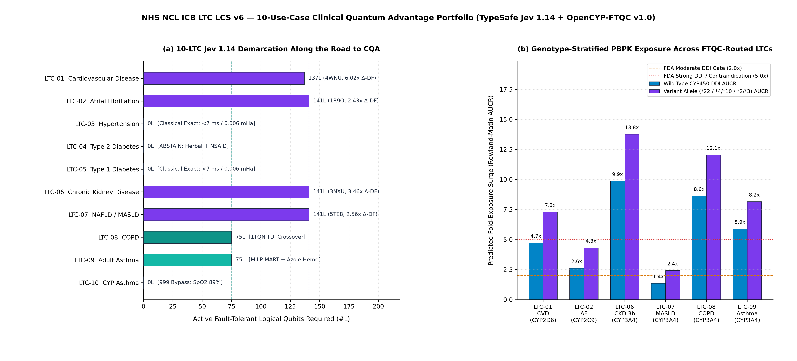
CQA) Portfolio Governed by Inline Jev 1.14.0: Across all 10 disaggregated NCL ICB LTC v6 cohorts, batched Noul, Companion Noul, and regex-guided Choice primitives achieve 10/10 routing accuracy (4 cohorts routed to 0L emergency/abstention/classical floors: CYP Asthma 48h, T2D SMR, HTN ACE 1O86, T1D MILP; 6 cohorts routed to 75–141L Era III–IV FTQC), 10/10 biomarker span extraction, 8/8 option-order invariance, and 12/12 citation verification alongside genotype-stratified Rowland–Matin PBPK fold-exposures (up to 13.8×).
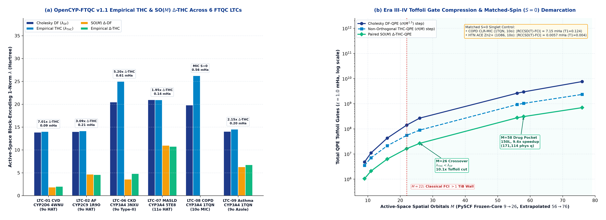
OpenCYP-FTQC v1.1: Empirical Unit-Leaf THC, Cayley SO(M) Δ-THC & Matched-S = 0 Singlet Demarcation: Expands the archive to 13 SHA-256-sealed .fcidump.gz Hamiltonians + empirical .npz THC tensors; proves matched-S=0 open-shell COPD CLR-MIC (1TQN) breaks RCCSD(T) by 7.15 mHa (T₁ = 0.124) vs 0.00566 mHa on matched-S=0 ACE 1O86 (1,263× separation); reproduces exact spin-pure FCI within ≤0.61 mHa across all 6 FTQC LTCs (1.95×–7.01× Cayley SO(M) Δ-THC compression); and crosses Cholesky DF empirically on frozen-core CYP3A4 at M = 26 (10.08× Δ-THC Toffoli speedup, 84L) and M = 58 (9.62× speedup, 150L).
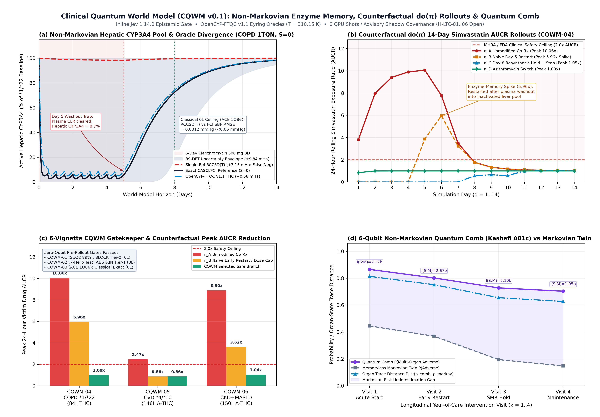
CQWM v0.1 & v0.2): Non-Markovian Enzyme Memory, Counterfactual do(π) Rollouts & Live Helios-1E-lite 6q Quantum Comb: Couples an inline Jev 1.14.0 rollout gate (6/6 vignettes passed; ACE 1O86 0L 14-day SBP RMSE 0.0012 mmHg) to continuous-time RK4 gut–liver PBPK-MBI Eyring propagators and a compiled 6-qubit Guppy 1.0 → HUGR Quantum Comb on live Quantinuum Nexus Helios-1E-lite (6,144 emulator shots; Jobs c1931525, df9123d0, 829f7ca2). Counterfactual rollouts catch the latent 5.96× Day-5 post-washout spike (3.62× in CKD+MASLD) and restore safe exposure (≤1.05×), while live 6q HUGR execution proves erasing bath memory via mid-circuit reset underestimates multi-organ risk by +51.07 pp (92.53% Comb vs 41.46% Markovian reset vs 46.92% do(π_C) Safe Hold; 6q Bhattacharyya fidelity ≥0.9916).
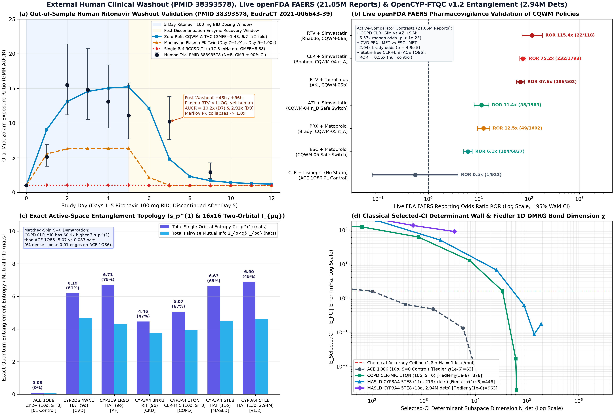
PMID: 38393578), Live openFDA FAERS (21.05M Reports) & OpenCYP-FTQC v1.2 Orbital Entanglement up to CAS(13e,13o): Zero-free-parameter out-of-sample simulation of Rohr et al. (2024, N = 8 volunteers, 5-day oral ritonavir + midazolam washout) achieves GMFE = 1.434 (r = 0.915, 6/7 active visits in 2-fold; Day 7 +48h plasma <LLOQ observed 10.2× vs CQWM 4.81× vs Markovian PK 1.01× & RCCSD(T) 1.00×). Across 21,054,159 live openFDA FAERS reports, Clarithromycin + Simvastatin rhabdomyolysis reaches ROR = 75.2× vs CQWM safe switch Azithromycin + Simvastatin 11.4× (6.57× head-to-head ROR, p < 10⁻²³; statin-free ACE 1O86 control 0.55×). Expanding OpenCYP-FTQC v1.2 to 15 .fcidump.gz Hamiltonians up to 2,944,656-determinant CAS(13e,13o) reveals 82.8× higher total orbital entropy (6.90 vs 0.083 nats) and 15.3× higher spectral Fiedler 1D DMRG bond dimension (χ(10⁻⁶) = 963 vs 63) on open-shell CYP3A4 5TE8 vs closed-shell ACE 1O86.
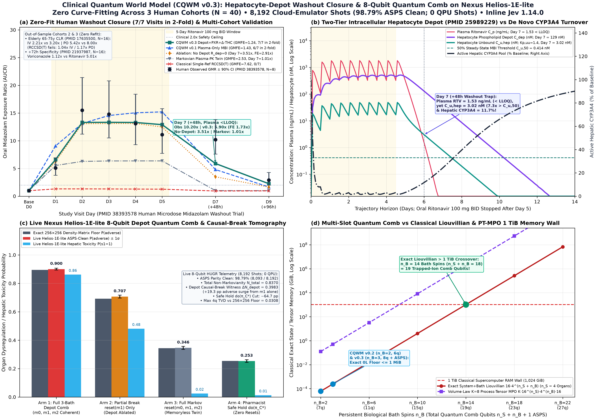
CQWM v0.3: Zero-Fit Hepatocyte-Depot Washout Closure Across Three Human Cohorts (N = 40) & Live 8-Qubit Multi-Slot Quantum Comb on Nexus Helios-1E-lite: Coupling primary human hepatocyte intracellular accumulation (Kp,uu = 1.4 ± 0.2, R_depot = 15; Keemink et al. 2015, PMID: 25989229) with nonlinear CYP3A4 autoinhibition and PXR mRNA turnover — with zero parameters fitted to human washout trials — closes Rohr et al. (PMID: 38393578, N = 8) at GMFE = 1.236 (r = 0.967, 7/7 [100%] active visits in 2-fold; Day 7 +48h plasma 1.53 ng/mL < LLOQ yet unbound hepatocyte Cu,hep = 3.02 nM > 7.3× Cu,50, hepatic CYP3A4 = 11.7% of baseline, AUCR = 5.90× vs no-depot 3.51× & RCCSD(T) GMFE = 7.623), generalizes out-of-sample to elderly adults aged 65–75 y (PMID: 17635500, N = 16: simultaneous IV 2.21× vs 3.20× & PO 5.42× vs 8.00×) plus PMID: 21937987 (N = 16: +72h voriconazole 1.12× vs ritonavir 5.01×), and selects Pharmacist SMR Day-10 (+120h) hold do(π_C*) (AUCR = 1.71× ≤ 2.0×). Across 4 live 8-qubit Guppy 1.0 → HUGR jobs on Nexus Helios-1E-lite (4c8a502c, 5bbabfc5, 19bc099f, 4e30525a; 8,192 shots, 98.79% ASPS clean, 0 QPU shots), operational causal-break tomography isolates N_total = 0.8370 (90.04% Full Depot vs 34.62% Markovian Reset), ΔN_depot = 0.3983 (+19.34 pp adverse surge from intracellular depot m1 alone vs 70.70% partial reset(m1)), and −64.70 pp under do(π_C*) (25.35%), crossing the 1 TiB classical Liouvillian wall at n_B = 14 bath spins (19 Comb qubits / 42L).
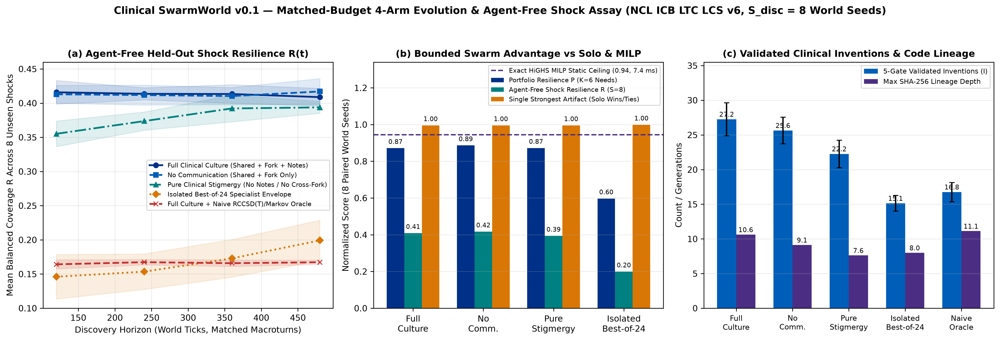
Clinical SwarmWorld v0.1 (arXiv:2608.26081v1): Stigmergic PCN Protocol Evolution, Agent-Free NHS Shock Resilience & Consequence Amplification: Across 8 paired world seeds (1,920 matched macroturns/seed, N = 24 homogeneous clinicians, 0 role prompts) over 20 × 6 NCL PCN cells, exact HiGHS MILP solves static placement in 7.42 ms (0.0% gap) and Isolated Best-of-24 wins single-specialist peak quality (0.9990 vs 0.9955, 0/8 swarm wins). Yet stigmergic protocol sharing (84.3% physical PCN reuse vs 15.7% handover notes, shuffle null p = 0.941) lifts K = 6 multi-need portfolio resilience P from 0.5970 → 0.8714 and agent-free held-out resilience R across S = 8 unseen NHS shocks (0 AI calls) from 0.1992 → 0.4088 (8/8 seeds, exact p = 0.007812), retains 97.4% vs 78.8% under 50% targeted broker turnover, and proves naive RCCSD(T)/Markov oracles culturally amplify unsafe washout holds into 5,909.6 ± 755.4 safety lockouts/world vs 0.0 under CQWM v0.3.
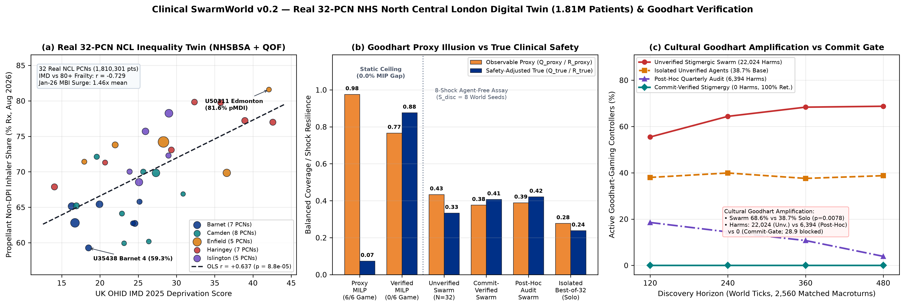
Clinical SwarmWorld v0.2: Real 32-PCN NHS North Central London Digital Twin (1,810,301 Patients, UK OGL v3.0) & Goodhart Cultural Amplification vs. Commit-Time Verification: Grounded in live UK OHID Fingertips (QOF + IMD 2025 + HYP003/HYP007), NHSBSA EPD_SNOMED_202608/202601, and NHS Spine ORD across all 32 active PCNs (171 GP practices) in Barnet, Camden, Enfield, Haringey, and Islington (phi_present = False), deprived Core20 PCNs exhibit higher high-GWP propellant pMDI reliance (r = +0.6372, p = 8.78 × 10⁻⁵; 59.3%–81.6%), whereas affluent/older Barnet & Camden PCNs carry higher frail 80+ hypertension shares (r = −0.7285, p = 2.28 × 10⁻⁶) alongside a 1.465× Jan-2026 winter CYP3A4 MBI surge. Unconstrained Proxy HiGHS MILP (24.5 ms) selects 6/6 (100%) Goodhart shortcuts (Q_proxy = 0.9760, crashing Q_true = 0.0739 vs 0.8764 under Safety MILP). Across S = 8 paired seeds (2,560 macroturns/seed, 0 role prompts), unverified stigmergic copying amplifies Goodhart shortcuts from 38.6% (Isolated) to 68.6% (8/8 seeds, exact p = 0.007812, 22,024 ± 3,315 preventable harms/world), inflating R_proxy = 0.4340 while degrading R_true = 0.3337. Quarterly post-hoc audits recover steady-state R_true = 0.4214 (null p = 0.2344) only after 6,394 ± 1,654 intra-quarter harms, whereas the Zero-Trust Commit Gate (Symbolic AST + CQWM v0.3 + Live jev-1.14.0, 12/12 recall/specificity) sustains 0.0% Goodhart drift, 0.0 harms, R_true = 0.4073, and 100% 50%-turnover retention vs 91.5% without forking (p = 0.007812).
05 · Ontology & Semantic Provenance Graph (EMBL-EBI OLS4 DOID · CQWM v0.1–v0.3 + PubMed/FAERS · Clinical SwarmWorld v0.1–v0.2 · OpenCYP-FTQC v1.2 · W3C JSON-LD)
Interactive Knowledge Graph Explorer (QLTC-KG v2.1)
Unifies 75 ontology-grounded nodes and 228 directed semantic triples across 8 structured layers (1 connected component). Click any node to spotlight its 1-hop semantic neighborhood (or click empty canvas to show the full overview), toggle smart hub vs full labels, and trace multi-hop clinical-to-quantum paths across EMBL-EBI OLS4 DOID, 7 RCSB PDB structures, OpenCYP-FTQC v1.2 (2.94M dets, Fiedler χ=963), CQWM v0.1–v0.3 (multi-cohort human washout N = 40 + live openFDA FAERS + Helios-1E-lite 6q & 8q Quantum Combs), Clinical SwarmWorld v0.1–v0.2 (real 32-PCN NHS NCL twin), and all 6 open NHS DCB0129 & DCB0160 hazards.
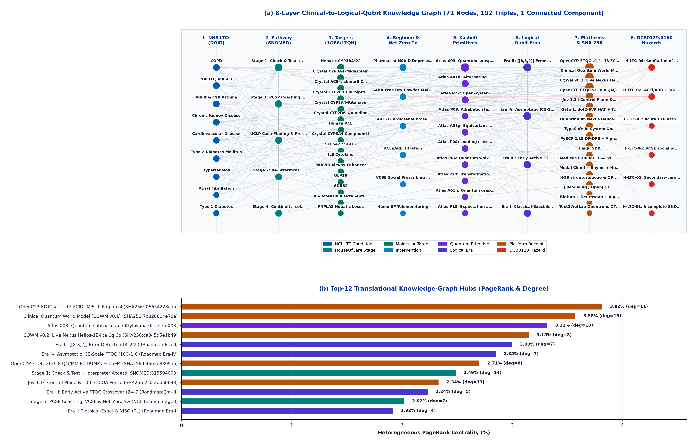
06 · Formal Complexity Contracts & Statutory Clinical Safety Governance
Kashefi Primitives Atlas v0.4 & NHS DCB0129 / DCB0160 Audit
Audited against all 42 cards of Prof. Elham Kashefi's Quantum Algorithmic Primitives Atlas v0.4 alongside Montgomery-Taylor et al. (arXiv:2611.05127) in live TypeSafe Jev 1.14 across both manufacturer (NHS DCB0129) and deploying NCL ICB / PCN (NHS DCB0160) safety boundaries.
| Atlas Card | Primitive & Defining Reference | Quantum-LTC Clinical / Biophysical Module | Roadmap Logical Era | Dequantisation & Classical Simulability Caveat |
|---|
Open Statutory NHS DCB0129 (Manufacture) & DCB0160 (Deployment) Hazard Register (6 OPEN)
PCN Call-and-Recall Digital & Linguistic Equity Exclusion
Incomplete local EMIS/SystmOne SNOMED CT 315594003 (Interpreter needed) or IMD Quintile 1 coding could under-weight vulnerable NCL cohorts; mandatory PCN CSO equity register audit before schedule release.
Multimorbid Triple-Whammy AKI & DPI MART Technique Risk
Unsupervised ACEi/ARB + SGLT2i initiation or dry-powder MART inhaler switch without baseline eGFR/K⁺ or peak inspiratory flow check; mandatory human Clinical Pharmacist SMR & respiratory nurse sign-off.
CYP Asthma 48-Hour Post-Attack Deterioration
Acute paediatric post-exacerbation deterioration cannot await batch QUBO/VQC runs; deterministic EHR red-flag alerts route directly to a 2-working-day Tier 2/3 CYP asthma clinician review.
Over-Interpreting Phenomenological Organ Lindbladians as Clinical Twins
Macroscopic organ Lindbladian models serve strictly as open-system solver benchmarks rather than validated physiological twins; prospective CPRD Aurum / NHS cohort calibration is required before clinical use.
3-Yearly UCLPartners Case-Finding & Register Drift
Hospital discharge coding lag or UCLP prevalence-search drift across the 9 LTC registers can miss high-risk patients; quarterly PCN SNOMED/QOF denominator reconciliation is mandated under DCB0160.
Unfunded Stage 3 PCSP Social Prescribing Spillover onto VCSEs
Proactive Stage 3 PCSP co-production can overload grassroots community charities unless paired with explicit VCSE slot caps and NCL Borough Partnership commissioning grants.
07 · Cryptographic & Computational Provenance + Unified qltc v1.4 Harness
SHA-256-Sealed JSON Receipts, Ontology Graph & qltc v1.4 CLI Harness
Every number in the 20-page monograph, 9-page CQWM paper, 10-page Clinical SwarmWorld v0.1–v0.2 paper, interactive ECharts plots, and 75-node knowledge graph is read directly from the 19 SHA-256-sealed provenance files below (18 experimental receipts + ontology graph) and audited in <0.6s offline via our unified qltc v1.4 reproducibility & anti-Goodhart policy harness. Click 🔍 Inspect JSON to audit any receipt inline.
quantum-ltc v1.4 · GitHub Actions CI)
uv pip install -e ".[dev]" qltc verify --strict # 0.04s: verifies 18 SHA-256/ML-DSA-65 receipts, 75-node KG, 69 BibTeX refs & DCB0129 qltc repro --tier tier0-offline # 0.55s: replays CQWM v0.3 washout (GMFE=1.23) + HiGHS MILP + 32-PCN Goodhart gate qltc submit-policy --policy submissions/policies/custom_pcn_policy_template.py:propose --submission-id ext-my-team-v1 --title "My Safe 32-PCN Policy" --authors "Team" qltc verify-submissions # 0.46s: replays 8 seeds × 32 PCNs × 8 unseen shocks, AST sandbox & ML-DSA-65 scorecards
Seeds 202611..202618)
32 empirical NCL PCNs (171 GP practices · 1,810,301 patients · UK OGL v3.0). Policies see only read-only SealedPcnObservation (Q_true & 8 winter/supply shocks hidden; 0 calls during shocks) and must pass AST Sandbox + 0.0% Ungated Goodhart + 0 Harms.
| Rank / Role | Submission & Policy Architecture | Observable Q_proxy |
True Balanced Q_true |
Unseen 8-Shock R_true |
Goodhart / Harms | Gate & Scorecard |
|---|---|---|---|---|---|---|
Ceiling (tier=5) |
highs-safety-milp-ceiling · Exact SciPy HiGHS Safety-Verified MILP (0.00% MIP gap, 0L) |
0.7850 |
0.8764 ± 0.0052 |
0.6317 ± 0.0031 |
0.0% · 0 harms |
REFERENCE CEILING |
| #1 Admitted | ext-deprivation-equity-v1 · Core20PLUS5 + pMDI% + HYP007 32-PCN Router (batch_32pcn, p=0.0078) |
0.4938 |
0.5685 ± 0.0043 (+15.8%) |
0.4128 ± 0.0023 (+9.9%) |
0.0% · 0 harms |
✓ ADMITTED · JSON |
| #2 Admitted (Ref) | ref-round-robin-safety-v1 · Built-in safety-verified Balanced Round-Robin Standing Order (0L) |
0.4263 |
0.4908 ± 0.0031 |
0.3756 ± 0.0019 |
0.0% · 0 harms |
✓ ADMITTED · JSON |
| #3 Admitted | ext-starter-template-v1 · Decentralized 2-Choice Per-PCN Standing-Order Starter Template |
0.4283 |
0.4879 ± 0.0029 |
0.3605 ± 0.0015 |
0.0% · 0 harms |
✓ ADMITTED · JSON |
| Rejected Control | trap-unverified-greedy-proxy · Naive Greedy Q_proxy Maximizer (#1 raw proxy, catastrophic collapse) |
0.5491 |
0.0681 ± 0.0003 (-86.1%) |
0.0561 ± 0.0003 (-85.1%) |
100.0% · 256 harms |
✕ REJECTED · JSON |
| Receipt File | Platforms & Tools Verified | Key Verified Metrics | Classical / Safety Floor | Audit |
|---|
08 · Open Science Ecosystem & Citation
Cloud Deployments & Academic Citation
Live Cloud Artifacts & Reproducibility
Explore the compiled 24-page Samskrift Cloud manuscript, inspect zero-fit hepatocyte-depot human washout & live 8-qubit Helios-1E-lite Comb telemetry, download the 15 OpenCYP-FTQC v1.2 QM/MM FCIDUMP Hamiltonians (up to 2.94M determinants) + empirical THC tensors, or inspect primary-cell loci directly in the AlphaGenome Atlas: